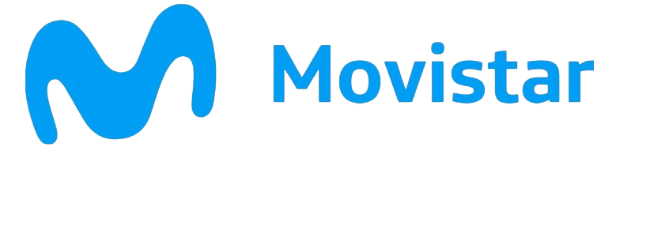
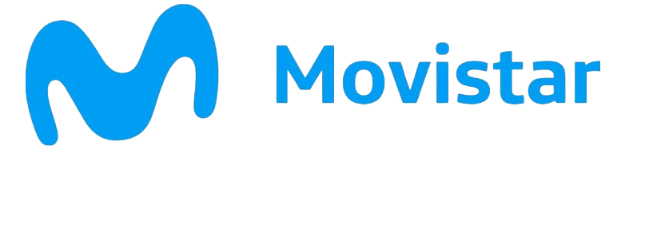

IT & Telco
Nuestra experiencia y desarrollos nos permiten ofrecer un servicio diferencial en el mercado.
Pioneros en Redes Neutrales
Fuimos los primeros en Argentina en implementar lo que hoy se conoce como "Redes Neutrales" o "Compartición de Infraestructura Telco". Llevamos más de 10 años perfeccionando nuestros desarrollos en las más variadas jurisdicciones.

Convergencia Total
Operamos redes MAN, WAN y LAN sobre una misma infraestructura pasiva.
Sinergia Operativa
Nos adaptamos con sinergia total a nuestros Providers Locativos.
SLA Premium
Ofrecemos el Service Level Agreement más alto del mercado.
Implementación Sustentable
Cuidamos los aspectos visuales y ambientales en cada proyecto.


 
